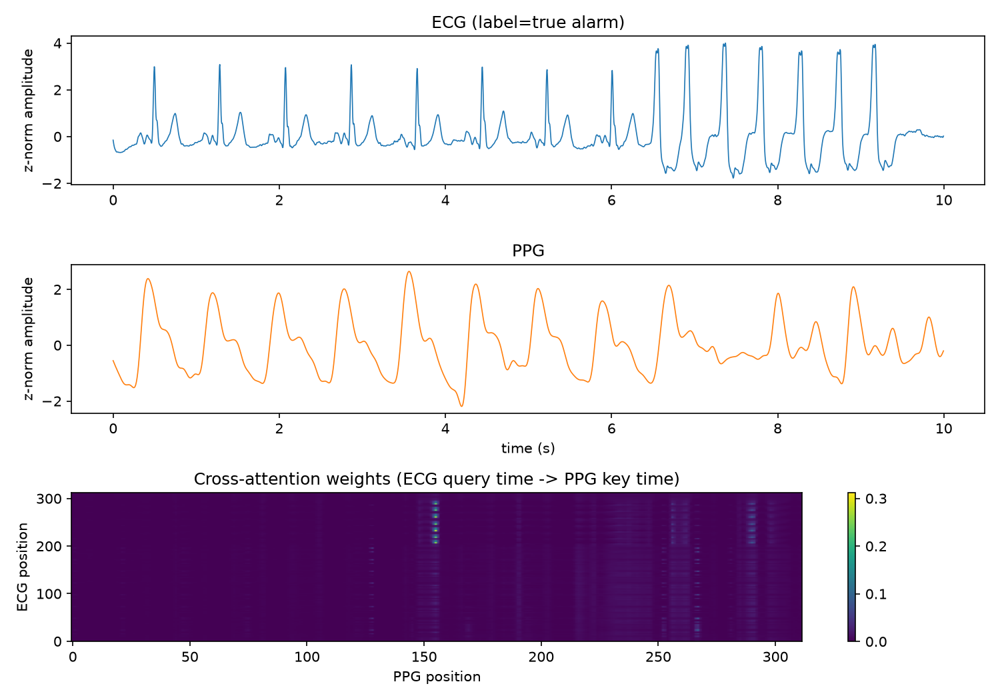
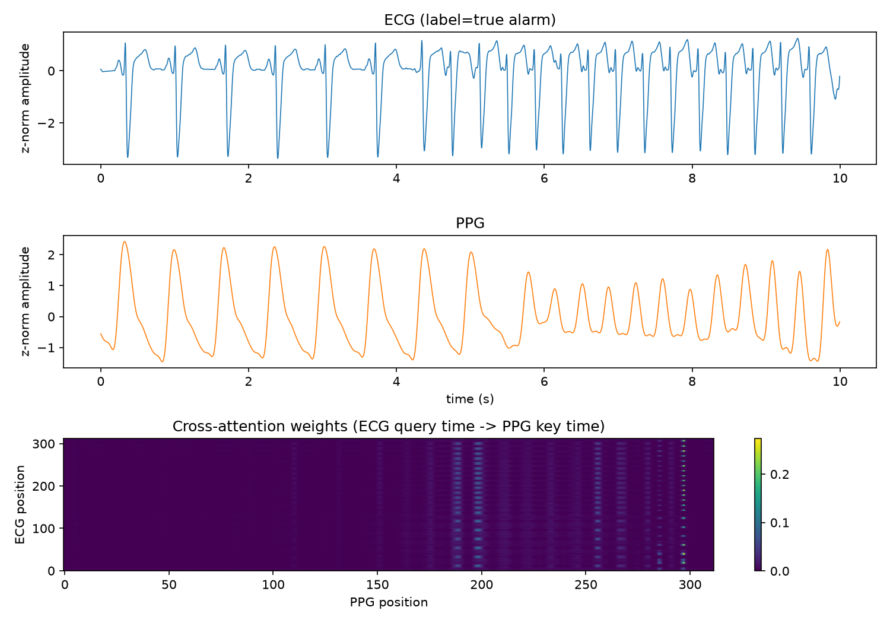

A dual-encoder model reads the electrical trace (ECG) and the peripheral pulse waveform (PPG) around an arrhythmia alarm, and a transformer cross-attention layer lets the ECG query the PPG for corroboration — a missing pulse during asystole, an irregular pulse train during a true tachyarrhythmia — before deciding whether the alarm is real.
01 · Core result
Four models, matched to within ~2% of the same parameter budget (~252K–266K params) so a win is attributable to the fusion mechanism and not extra capacity. Every number below is the mean ± std across 3 random seeds × 5 record-wise folds — never window-wise, so no patient's signal leaks across the train/validation split.
| Variant | Params | F1 | Sensitivity | Specificity | AUC |
|---|---|---|---|---|---|
| PPG only | 266,001 | 0.660 ± 0.039 | 0.856 ± 0.076 | 0.555 ± 0.106 | 0.747 ± 0.051 |
| ECG only | 266,001 | 0.736 ± 0.030 | 0.805 ± 0.058 | 0.758 ± 0.126 | 0.818 ± 0.053 |
| Concatenation fusion | 252,229 | 0.750 ± 0.030 | 0.804 ± 0.068 | 0.794 ± 0.067 | 0.853 ± 0.031 |
| Cross‑attention fusion proposed | 261,505 | 0.774 ± 0.046 | 0.797 ± 0.062 | 0.831 ± 0.109 | 0.866 ± 0.041 |
Ordering on both metrics is monotonic in the predicted direction: PPG only < ECG only < concatenation < cross-attention. That gap between concatenation and cross-attention — +0.024 F1, +0.013 AUC at matched parameter count — is the specific quantity this project exists to measure.
PPG‑only is the worst single-signal model (F1 0.660), yet adding it back — even without attention — lifts concatenation above ECG‑only. Its failure modes (perfusion loss, probe movement) are independent of ECG's, so it contributes real information the model can't get from ECG alone.
Cross-attention posts the highest specificity (0.831) of any variant — it is comparatively better at recognizing when an ECG-abnormal window is not corroborated by the pulse, which is exactly the false-alarm case the whole task is built around.
A paired t-test on F1 across the 15 matched (seed, fold) splits — both models trained on the identical train/val split in each pair — puts the cross-attention gain over concatenation below the conventional α=0.05 threshold. This is the strongest single piece of evidence that cross-modal attention adds real value here, not just a favorable mean across noisy folds.
02 · Where it struggles
The five Challenge 2015 alarm types have very different base rates and difficulty. Pooling them into one F1 number (as in section 01) hides that variation — broken out here using out-of-fold predictions across the full dataset, cross-attention model.
| Alarm type | n | True alarms | F1 | Sensitivity | Specificity | AUC |
|---|---|---|---|---|---|---|
| Asystole | 93 | 14 | 0.439 | 0.643 | 0.772 | 0.810 |
| Bradycardia | 73 | 39 | 0.805 | 0.795 | 0.794 | 0.846 |
| Tachycardia | 111 | 106 | 0.915 | 0.868 | 0.400 | 0.717 |
| Ventricular Flutter/Fib. | 45 | 5 | 0.500 | 0.800 | 0.825 | 0.840 |
| Ventricular Tachycardia | 270 | 59 | 0.646 | 0.712 | 0.863 | 0.818 |
With the most support (111 windows, 106 true alarms) and the highest sensitivity (0.868), the model catches almost every genuine tachycardia — but its specificity (0.400) is the lowest of any class, matching the clinical reality that heart-rate-threshold alarms are the easiest to trigger spuriously from motion or noise.
Asystole (14 true alarms) and Ventricular Flutter/Fibrillation (5 true alarms) are the rarest classes by far. Their F1 scores (0.439, 0.500) are the lowest in the table, but with this little support the numbers carry far more variance than the pooled result — a caveat worth stating rather than hiding.
03 · Size and speed
Single-window inference, same GPU used for training. Model capacity was kept deliberately small to avoid overfitting this dataset size — this is the check that the claim holds.
| Variant | Params | Latency | Throughput |
|---|---|---|---|
| ECG only | 266,001 | 3.46 ms | 289 /s |
| PPG only | 266,001 | 3.41 ms | 293 /s |
| Concat | 252,229 | 6.86 ms | 146 /s |
| Cross-attention | 261,505 | 9.36 ms | 107 /s |
All four variants respond in well under 10ms per alarm — comfortably real-time. Cross-attention is the slowest (the O(T′²) attention matrix over ~300-step feature sequences), but the accuracy gain was not bought with a deployment-relevant speed cost.
04 · Robustness
Windows scored on a flatline/clipping heuristic and split into terciles, evaluated with the cross-attention model using out-of-fold predictions across all 592 windows.
F1 by signal-quality tercile (cross-attention, out-of-fold predictions over all 592 windows).
F1 is lowest in the noisiest tercile and recovers once signal quality crosses the low threshold, then eases slightly at the very top — consistent with low-quality windows being genuinely harder to verify, while the highest-quality tercile is small enough (n=233 vs. the full 592) that some of that dip is within noise.
Out-of-fold predictions across all 5 folds (every window scored by the model that never trained on it),
not a single held-out slice — the pipeline (src/evaluate.py) reruns this stratification for any fold or variant on request.
05 · Interpretability
Extracted cross-attention weight matrices (ECG query time → PPG key time) for individual alarm windows, alongside the raw ECG and PPG traces — checked for whether the learned alignment tracks real ECG-to-pulse timing rather than a dataset artifact.


Full gallery (8 examples) and the generating script live at runs/attention_plots/ and
src/attention_viz.py in the repository.
06 · Generalization
35 subjects (19 AF, 16 non-AF), never trained on. This is a genuine distribution shift: a different hospital population, and a different label (AF vs. non-AF, rather than true/false alarm) — read it as a transfer/generalization signal, not an apples-to-apples benchmark.
| Fold checkpoint | F1 | Sens. | Spec. | AUC |
|---|---|---|---|---|
| fold 0 | 0.542 | 0.404 | 0.896 | 0.742 |
| fold 1 | 0.581 | 0.472 | 0.820 | 0.732 |
| fold 2 | 0.661 | 0.686 | 0.537 | 0.676 |
| fold 3 | 0.693 | 0.723 | 0.568 | 0.727 |
| fold 4 | 0.733 | 0.909 | 0.322 | 0.716 |
| mean ± std | 0.642 ± 0.071 | 4,200 windows · 54.3% AF | ||
The model was trained to answer "does the PPG corroborate this ECG-flagged arrhythmia event," not "is this window AF." AF detection and alarm verification are related — both hinge on ECG/PPG agreement — but not identical tasks, and MIMIC PERform AF was collected on a different device/population than the Challenge 2015 ICU monitors. An F1 around 0.64 on a fully out-of-distribution transfer task is a reasonable generalization signal, not a failure.
07 · Method, in brief
Both channels resampled to 250 Hz, bandpass-filtered per-signal (ECG 0.5–40 Hz, PPG 0.5–8 Hz), z-normalized per window, and windowed to the 10 s immediately preceding each alarm trigger — anchored to the trigger's end, since Challenge 2015 "short" records carry zero signal after it.
Two non-weight-shared 1D-CNN stacks (32→64→128 channels) — one per signal, since ECG and PPG differ in morphology, frequency content, and failure mode. Each outputs a sequence of feature vectors, not a pooled vector, so attention has a time axis to align.
ECG features supply the queries, PPG features supply the keys/values, with positional encodings on both. Every ECG timestep learns which PPG timestep to compare against — learning the pulse-transit delay from data instead of assuming it's constant.